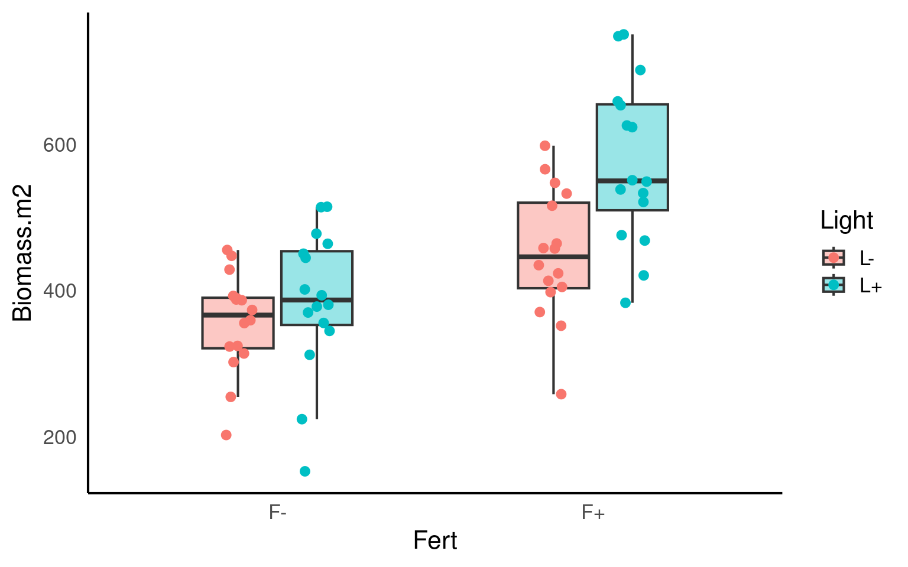
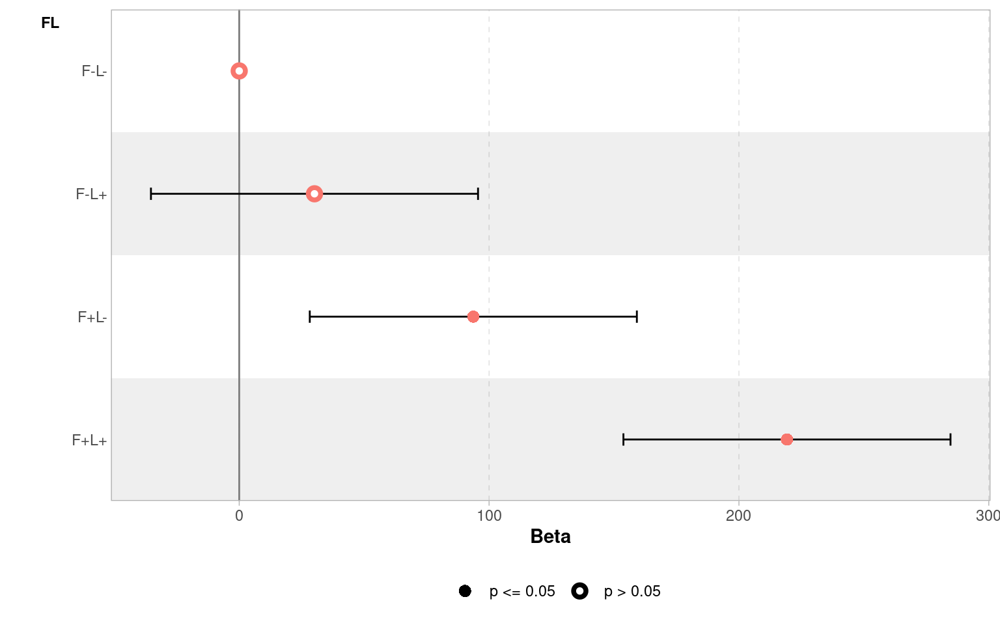
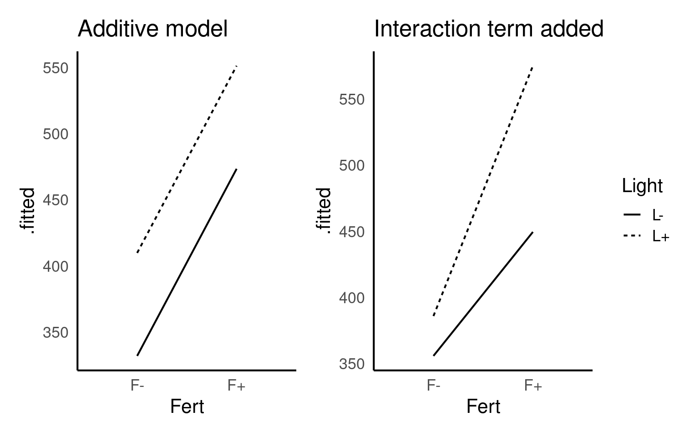

22 Interactions
So far we have worked almost exclusively with single explanatory variables either continuous (regression) or categorical (t-test or ANOVA). But what about analyses where we have more than one possible explanatory variable? Extra terms can easily be incorporated into linear models in order to test this.
22.1 Factorial linear models
The example data is the response of above ground plant biomass production of grassland plots in relation to two resource addition treatments. The addition of Fertiliser to the soil and the addition of Light to the grassland understorey. If biomass is limited by the nutrients in the soil, we would expect the addition of fertiliser to increase production. If biomass is limited by low levels of light caused by plant crowding we would expect an addition of light to increase biomass.
You should first check the data and look at the top rows, we can see that this shows the application or non-application of fertiliser and light additions:
Inspection of the dataset shows that the same data is presented in two ways:
Column Fert shows the status of Fertiliser only (F +/-) (two levels)
Column Light shows the status of Light only (L +/-) (two levels)
Column FL shows whether fertiliser and light have been applied (four levels, a combination of the previous two columns)
Column Biomass.m2 shows the biomass per metre squared of coverage
A simple analysis of the dataset will show that we have all four possible combinations are present, this is known as a fully factorial design:
control (F- L-, no added light or fertiliser)
fertiliser (F+ L-)
light (F- L+)
addition of both (F+ L+)
There are observations for each treatment combination.
22.2 Data visualisation
Before we start any analysis or modelling it is a good idea to visualise our data:
Data visualisation
Produce a simple plot of the group level differences between treatments

22.3 ANOVA
If we use the FL column as a predictor then this is equivalent to a four-level one way ANOVA.
Call:
lm(formula = Biomass.m2 ~ FL, data = biomass)
Residuals:
Min 1Q Median 3Q Max
-233.619 -42.842 1.356 67.961 175.381
Coefficients:
Estimate Std. Error t value Pr(>|t|)
(Intercept) 355.79 23.14 15.376 < 2e-16 ***
FLF-L+ 30.13 32.72 0.921 0.36095
FLF+L- 93.69 32.72 2.863 0.00577 **
FLF+L+ 219.23 32.72 6.699 8.13e-09 ***
---
Signif. codes: 0 '***' 0.001 '**' 0.01 '*' 0.05 '.' 0.1 ' ' 1
Residual standard error: 92.56 on 60 degrees of freedom
Multiple R-squared: 0.4686, Adjusted R-squared: 0.442
F-statistic: 17.63 on 3 and 60 DF, p-value: 2.528e-08We can see that the control treatment
F- L-is the intercept with a mean of 356g and standard error of 23g.The Light treatment adds an average of 30g to the biomass (but this close to the standard error of this estimated mean difference - 32.72g).
In contrast the addition of fertiliser
F+L-adds 93g to the biomass.The
F+ L+Treatment effect adds 219g of biomass compared to the no fertiliser and no light treatment.
Remember the intercept represents the value of y when x = 0, when applied to factorial predictors it represents the mean of one of the levels. In this data there are two conditions for each variable: +/-. So in this model the intercept represents Biomass when both Fert and Light are “-”.
If we wanted to get the precise confidence intervals of effect sizes we could use broom::tidy(ls_1, conf.int = T) or confint(ls1).
We can visualise these differences with a coefficient plot, and see clearly that adding light by itself produce a slight increase in the mean biomass of our samples but the 95% confidence interval includes zero, so we don’t have any real confidence that this is a consistent/true effect.

22.3.1 Reporting and understanding ANOVA
Our model summary provides a lot of information, can you identify this information?
- Raw variance in Biomass explained:
Multiple R-squared is 0.47, 47% of the total variance in biomass can be explained by the Fert and Light treatments
- Adjusted variance in Biomass explained:
Accounting for the number of different categories in the model (complexity) the adjusted variance explained is 44%
- Whether variance explained by treatments is statistically significant?
22.4 Interaction effects
Looking at the estimates from the four different treatments - do you think the effects of Fertiliser and Light on Biomass are independent of each other?
An interaction effect in a linear model is when the effect of one variable depends on the level of another variable.
Below are two figures that show the slope or effect we might expect to see if Fertiliser and Light have only additive effects (they each affect Biomass but do not interact with each other) or if they have an interaction effect (fertiliser and light each have more of an effect in the presence of each other).

Your turn
Look at the plots you made previously, and the estimates of your original model - do you think there is evidence of an interaction effect?
It’s not hard to imagine that Light might help with plant growth on its own, and fertiliser might help on its own, but the combined effect of fertiliser and light could be greater (or sometimes different) than what you’d expect just by adding up the effects of each one separately. That extra effect, due to the two variables interacting, is the interaction effect.
If you don’t include an interaction effect when it’s needed, your model might be misleading. It could either underestimate or overestimate the true effect of each variable because it doesn’t account for how they work together. This could lead to wrong conclusions about the impact of each variable, making your predictions or understanding of the relationships less accurate.
In our case I think it is highly likely that Light and Fertiliser have an interaction effect
22.4.1 Modelling an interaction effect
To produce an interaction model, we need to use the separate columns for fertiliser and light and then to include an interaction term we add this as Light:Fert written out as follows:
Call:
lm(formula = Biomass.m2 ~ Fert + Light + Fert:Light, data = biomass)
Residuals:
Min 1Q Median 3Q Max
-233.619 -42.842 1.356 67.961 175.381
Coefficients:
Estimate Std. Error t value Pr(>|t|)
(Intercept) 355.79 23.14 15.376 < 2e-16 ***
FertF+ 93.69 32.72 2.863 0.00577 **
LightL+ 30.13 32.72 0.921 0.36095
FertF+:LightL+ 95.41 46.28 2.062 0.04359 *
---
Signif. codes: 0 '***' 0.001 '**' 0.01 '*' 0.05 '.' 0.1 ' ' 1
Residual standard error: 92.56 on 60 degrees of freedom
Multiple R-squared: 0.4686, Adjusted R-squared: 0.442
F-statistic: 17.63 on 3 and 60 DF, p-value: 2.528e-08Notice that estimates in the model for the effect of Fert:Light have changed. All of the other estimates and terms have stayed the same on every other row except this one. Why has this changed?
An interaction model changes the hypothesis we are asking - rather than trying to make an estimate of the mean difference for F+L+ vs F-L- as in our first model, now we testing explicitly whether there is more of an effect on Biomass when Fert and Light are combined than we might expect from simply adding their effects together.
Here the model is quantifying that we are finding an extra 95.4 g/m^2 of Biomass when we combine Fertiliser and Light treatments than we would predict from each effect individually.
So in model 2 we have separated the treatment of F+L+ into three parts, the effect of adding light, the effect of adding fertiliser and the effect of combining them. Add these together and it should match our original estimate from model 1.
This effect appears to be statistically significant (but only just):
Don’t make the mistake of looking at the main effect of light treatment, and reporting there is no effect because the uncertainty intervals cross zero. The main effect of light gives the average effect across the two fertiliser treatments. However, because of the interaction effect, we know this doesn’t tell the whole story - whether light has an effect depends on whether fertiliser has been applied.
So, if you have a significant interaction term, you must consider the main effects, regardless of whether they are significant on their own.
22.4.2 Write-up
We could now write this up as follows:
There was an interaction effect of light and fertiliser treatments (ANOVA F1,60 = 4.25, P = 0.044) in which combining treatments produced substantially more biomass (95.4g [95% CI: 2.8 - 188]) than expected from the additive effects alone (Fertiliser 93.7g [28.2 - 159.2], Light 30.1g [-35.3 - 95.6]).
Do not make the mistake of just reporting the statistics, the interesting bit is the size of the effect (estimate) and the uncertainty (confidence intervals).
22.4.3 ANOVA tables
So you have made a linear model with an interaction term, how do you report whether this interaction is significant? How do you report the main effect terms when there is an interaction present?
- Start with the interaction
In previous chapters we ran the anova() function directly on our linear model. This works well for simple & ‘balanced’ designs (there are equal sample sizes in each level of a factor), but can be misleading with ‘unbalanced’ designs or models with complex interactions.
In order to report an F statistic for the interaction effect, we need to carry out an F-test of two models, one with and one without the interaction effect. Here we can use the anova() function again but we will compare nested models
This F-test is testing the null hypothesis that there is no true interaction effect. The significance test rejects the null hypothesis (just). It also provides the Akaike information criterion (AIC), an alternative method of model selection (more on this later).
22.4.4 Check Model fit
We need to make sure that any model we make fits our data and our assumptions well. It is important to do this before analysing any statistical tests or interpreting our results:
In this case it looks like our model is a good fit and we can happily proceed:
22.4.5 post-hoc
In this example it is unnecessary to spend time looking at pairwise comparisons between the four possible levels, the interesting finding is to report the strength of the interaction effect. But it is possible to generate estimated means, and produce pairwise comparisons with the emmeans() package
emmeans::emmeans(ls_2, specs = pairwise ~ Light + Fert) |>
confint()
# including the argument pairwise in front of the ~ prompts the post-hoc pairwise comparisons.
# $emmeans contains the estimate mean values for each possible combination (with confidence intervals)
# $ contrasts contains tukey test post hoc comparisons between levels$emmeans
Light Fert emmean SE df lower.CL upper.CL
L- F- 356 23.1 60 310 402
L+ F- 386 23.1 60 340 432
L- F+ 449 23.1 60 403 496
L+ F+ 575 23.1 60 529 621
Confidence level used: 0.95
$contrasts
contrast estimate SE df lower.CL upper.CL
(L- F-) - (L+ F-) -30.1 32.7 60 -117 56.35
(L- F-) - (L- F+) -93.7 32.7 60 -180 -7.22
(L- F-) - (L+ F+) -219.2 32.7 60 -306 -132.75
(L+ F-) - (L- F+) -63.6 32.7 60 -150 22.90
(L+ F-) - (L+ F+) -189.1 32.7 60 -276 -102.63
(L- F+) - (L+ F+) -125.5 32.7 60 -212 -39.06
Confidence level used: 0.95
Conf-level adjustment: tukey method for comparing a family of 4 estimates 22.5 ANCOVA
The previous section looked at an interaction between two categorical variables, we can also examine interactions between a factor and a continuous variable. Often referred to as ANCOVA.
The data is from an experimental study of the effects of low-level atmospheric pollutants and drought on agricultural yields. The experiment aimed to see how the yields soya bean (William variety), were affected by stress and Ozone levels. Your task is to first determine whether there is any evidence of an interaction effect, and if not drop this term from your model and then report the estimates and confidence intervals from the simplified model.
22.5.1 Activity: Build your own analysis
Try and make as much progress as you can without checking the solutions. Click on the boxes when you need help/to check your working
22.5.1.1 Task: Explore the data!
Check the data for errors and formatting
# check the structure of the data
glimpse(pollution)
# check data is in a tidy format
head(pollution)
# check variable names
colnames(pollution)
# check for duplication
pollution |>
duplicated() |>
sum()
# check for typos - by looking at impossible values
# quick summary
summary(biomass)
# check for typos by looking at distinct characters/values
pollution |>
distinct(Stress)
# missing values
biomass |>
is.na() |>
sum()Rows: 30
Columns: 3
$ Stress <chr> "Well-watered", "Well-watered", "Well-watered", "Well-watered"…
$ O3 <dbl> 0.02, 0.05, 0.07, 0.08, 0.10, 0.02, 0.05, 0.07, 0.08, 0.10, 0.…
$ William <dbl> 8.623533, 8.690642, 8.360071, 8.151910, 8.032685, 8.535426, 8.…| Stress | O3 | William |
|---|---|---|
| Well-watered | 0.02 | 8.623533 |
| Well-watered | 0.05 | 8.690642 |
| Well-watered | 0.07 | 8.360071 |
| Well-watered | 0.08 | 8.151910 |
| Well-watered | 0.10 | 8.032685 |
| Well-watered | 0.02 | 8.535426 |
[1] "Stress" "O3" "William"
[1] 0
Fert Light FL Biomass.m2
Length:64 Length:64 Length:64 Min. :152.3
Class :character Class :character Class :character 1st Qu.:370.1
Mode :character Mode :character Mode :character Median :425.9
Mean :441.6
3rd Qu.:517.2
Max. :750.4 | Stress |
|---|
| Well-watered |
| Stressed |
[1] 022.5.1.2 Visualise the data
Make simple scatterplots to look at relationships
22.5.1.3 Model the data
Build a linear model
| term | estimate | std.error | statistic | p.value | conf.low | conf.high |
|---|---|---|---|---|---|---|
| (Intercept) | 8.4902296 | 0.0974956 | 87.0832016 | 0.0000000 | 8.2898245 | 8.6906347 |
| O3 | -6.4671581 | 1.4014008 | -4.6147812 | 0.0000929 | -9.3477788 | -3.5865375 |
| StressWell-watered | 0.2642307 | 0.1378796 | 1.9163870 | 0.0663707 | -0.0191849 | 0.5476463 |
| O3:StressWell-watered | -1.3472822 | 1.9818801 | -0.6798001 | 0.5026393 | -5.4210950 | 2.7265306 |
It looks as though there is no strong evidence here for an interaction effect, but before we proceed any further we should check that the model is a good fit for our data.
22.5.1.4 Check the model fit
22.5.1.5 Simplify the model
Everything looks pretty good, so now we could go ahead and simplify our model.
Testing that dropping the interaction term does not significantly reduce the variance explained
| Res.Df | RSS | Df | Sum of Sq | F | Pr(>F) |
|---|---|---|---|---|---|
| 27 | 0.5799809 | NA | NA | NA | NA |
| 26 | 0.5698523 | 1 | 0.0101286 | 0.4621281 | 0.5026393 |
Get the F values of the simpler model
| Res.Df | RSS | Df | Sum of Sq | F | Pr(>F) |
|---|---|---|---|---|---|
| 28 | 1.7181003 | NA | NA | NA | NA |
| 27 | 0.5799809 | 1 | 1.138119 | 52.98317 | 1e-07 |
| Res.Df | RSS | Df | Sum of Sq | F | Pr(>F) |
|---|---|---|---|---|---|
| 28 | 0.8176233 | NA | NA | NA | NA |
| 27 | 0.5799809 | 1 | 0.2376424 | 11.06303 | 0.0025466 |
22.5.1.6 Report the estimates and confidence intervals of the new model
| term | estimate | std.error | statistic | p.value | conf.low | conf.high |
|---|---|---|---|---|---|---|
| (Intercept) | 8.5333427 | 0.0733079 | 116.404189 | 0.0000000 | 8.3829273 | 8.6837580 |
| O3 | -7.1407992 | 0.9810200 | -7.278954 | 0.0000001 | -9.1536861 | -5.1279124 |
| StressWell-watered | 0.1780046 | 0.0535173 | 3.326113 | 0.0025466 | 0.0681962 | 0.2878131 |
22.5.1.7 Write up the results
I hypothesised that plants under stress might react more negatively to pollution than non-stressed plants, however when tested I found no evidence of a negative interation effect between stress and Ozone levels (F1,26 = 0.4621, P = 0.5). Individually however, while well-watered plants had higher yields than stressed plants (mean 0.178 [95% CI: 0.0682 - 0.288]) (F1,27 = 11, P = 0.003), there was a much larger effect of Ozone, where every unit increase (\(\mu\)L L-1) produced a mean decrease in yield of 7.14 kg ha-1 [5.13 - 9.15] (F1,27 = 53, P < 0.001).
22.6 Summary
Always have a good hypothesis for including an interaction
When models have significant interaction effects you must always consider the main terms even if they are not significant by themselves
Report F values from interactions as a priority
IF interactions are significant then estimates should come from the full model, while F-values should come from a reduced model (for main effects). IF interaction terms are not significant they can be removed (model simplification).
Use nested models to avoid mistakes when using an unbalanced experiment design
Always report estimates and effect sizes - this is the important bit - and easy to lose sight of when models get more complicated